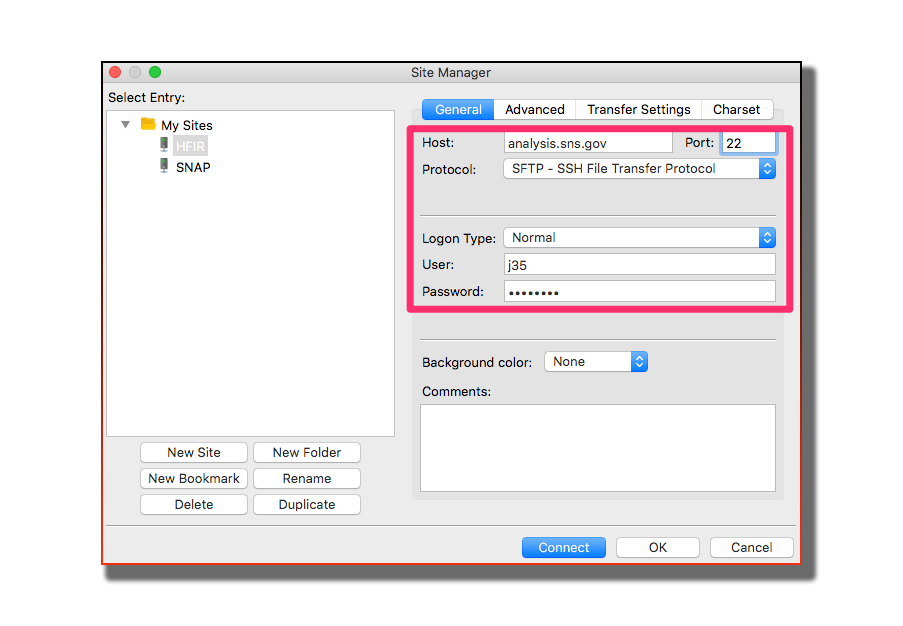
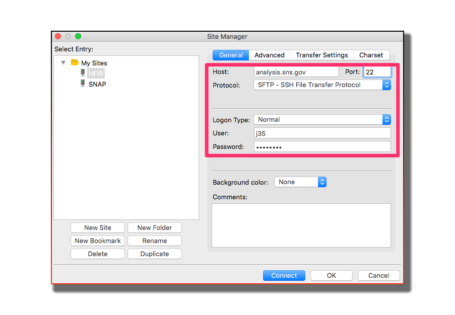

Analysis¶
How to access your data¶
Step 1 Create an XCAMS account
If you have not done so, please create an XCAMS account

Step 2 Request access to HFIR data
Request access by vising this page https://neutronsr.us/accounts/request.html

How to connect to our computer¶
the best way to analyze your data is by using our data analysis and visualization tools on our analysis computer. No software to install, all you need is connect to our computer.
 
